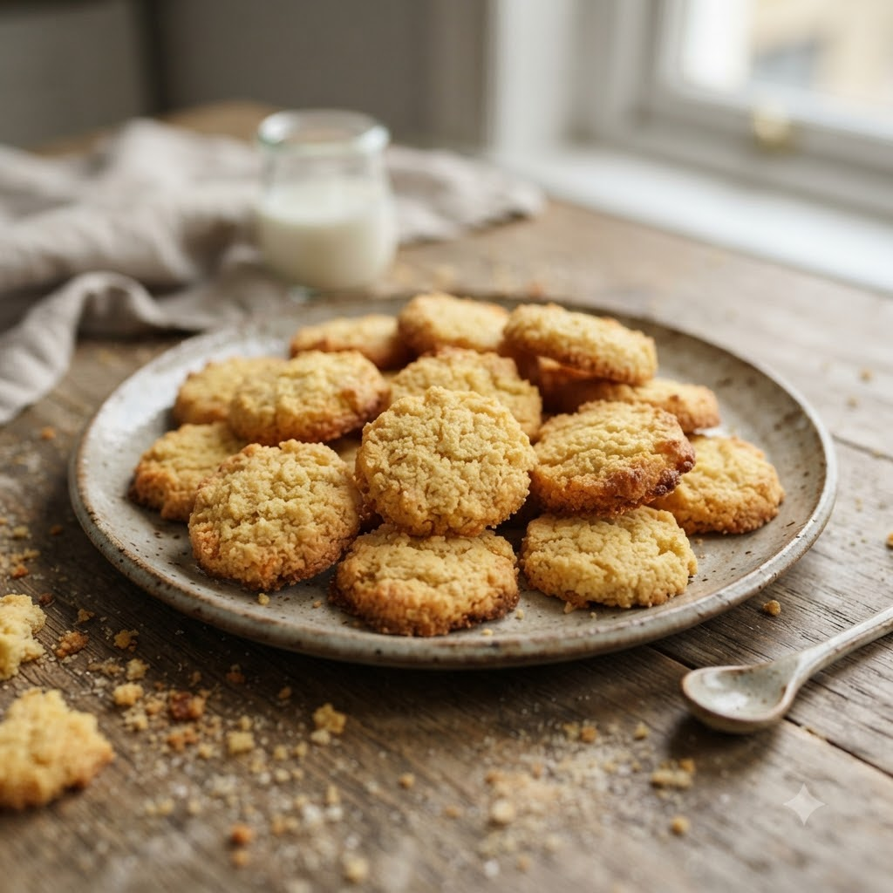

Butter Cookies

Butter Cookies
Airfryer – Bake 160°C 11 min makes ~20
🔥 Airfryer
Ingredients
- 1 cup butter, softened
- 3/4 cup powdered sugar
- 2 cups flour
- 1/2 tsp vanilla extract
- Pinch of salt
Method
1Preheat: Preheat the Airfryer to 160°C for 4 minutes before adding the food to the basket.
2Cream butter and sugar until light and fluffy.
3Fold in flour, vanilla and salt to form a soft dough.
4Shape into small discs and place on parchment paper inside the basket, spaced apart.
5Bake at 160°C for 11 minutes until edges turn golden. Cool before serving.